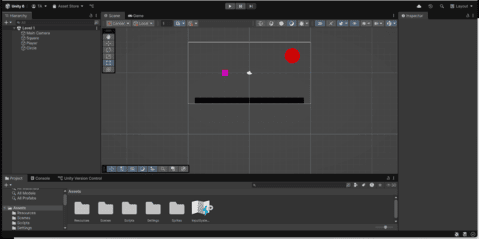
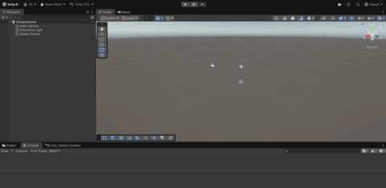

As I explained before, I started learning Unity's game engine about 1.5 years before i re-attended college. This was in hopes to get better at game development. Whilst I have paused learning too much more for now, I hope to go back in the future and finish some of my incomplete projects.

My first game was planned to be a rather basic platformer, this was so I could improve my knowledge and skills without having to push myself too hard. I learned basic animations, hitboxes, level design and basic scripts for things such as movement, interactivity and such. I would still like to come back to this eventually and finish it to further push my basic game development skills.

This originally was planned to be an early game for me. However, it didn't get far at all as I was very inexperienced and moving into 3D to start programming was a much more mentally and phsyically difficult task compared to the prototypes of 2D games I had made previously. I do wish to come back to this eventually and hopefully complete it.